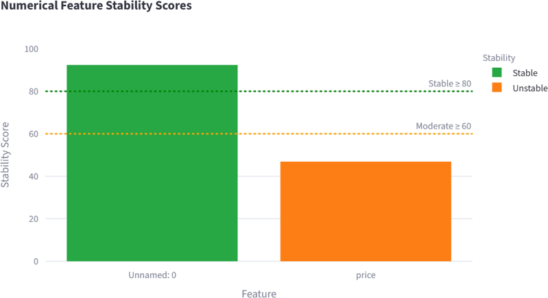
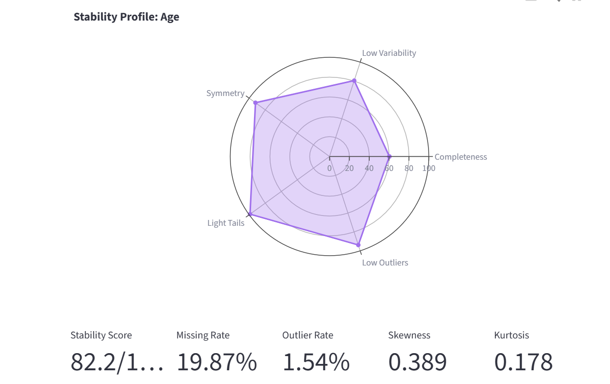

Feature Stability Analysis
Overview
Feature stability analysis evaluates the quality and reliability of features within a dataset. The objective is to identify features that are suitable for analysis and machine learning tasks, while highlighting features that may contain excessive missing values, extreme distributions, or a large number of outliers.
In AutoEDA, each feature is assigned a stability score ranging from 0 to 100. Higher scores indicate more reliable and well-behaved features.
Why Feature Stability Matters
Data quality has a direct impact on the performance of statistical analysis and machine learning models. Features with high levels of missing data, extreme skewness, or excessive variability can negatively affect model accuracy and interpretability.
Feature stability analysis helps users:
Identify problematic features early in the analysis process.
Detect data quality issues.
Prioritize feature engineering efforts.
Decide which features should be transformed, cleaned, or removed.
Improve downstream machine learning performance.
Numerical Feature Stability
For numerical features, the stability score is calculated using several statistical indicators.
Missing Rate
Features with a high percentage of missing values receive a penalty because incomplete data reduces reliability and may require imputation.
Coefficient of Variation
The coefficient of variation measures the amount of variability relative to the mean. Extremely high variability may indicate instability within the feature.
Skewness
Skewness measures the asymmetry of a distribution.
A skewness value close to zero indicates a symmetric distribution.
Large positive skewness indicates a long right tail.
Large negative skewness indicates a long left tail.
Highly skewed distributions may require transformation before modeling.
Kurtosis
Kurtosis measures the heaviness of the tails of a distribution.
Features with excessive kurtosis often contain extreme observations that may influence statistical analysis.
Outlier Rate
The outlier rate represents the percentage of observations identified as outliers using the Interquartile Range (IQR) method.
Features containing a large proportion of outliers receive a lower stability score.
Categorical Feature Stability
Categorical features are evaluated using different criteria.
Missing Rate
The proportion of missing values within the feature.
Entropy
Entropy measures the uncertainty or randomness of categorical values.
Low entropy indicates that a small number of categories dominate the feature.
High entropy indicates a more balanced distribution of categories.
Cardinality
Cardinality refers to the number of unique categories contained within a feature.
Features with extremely high cardinality may be difficult to encode and model.
Mode Frequency
Mode frequency represents the percentage of records belonging to the most common category.
A very high mode frequency may indicate that the feature provides limited information.
Stability Classification
AutoEDA categorizes features according to their stability score.
Stability |
Score Range |
|---|---|
Stable |
> 80 |
Moderate |
60 - 80 |
Unstable |
< 60 |
The following figure shows an example of how AutoEDA categorizes features according to their stability score.
{kind=link}

Interpreting Results
Stable features are generally suitable for analysis and machine learning without significant modification.
Moderately stable features may require preprocessing such as transformation, scaling, or missing value treatment.
Unstable features should be carefully reviewed and may require substantial preprocessing or removal from the dataset.
The following figure shows an example of how AutoEDA shows the stability profile of every feature.
{kind=link}

Limitations
The stability score is intended as a heuristic indicator and should not replace domain knowledge or expert judgment.
Certain features may receive low stability scores while still being valuable for predictive modeling, depending on the application and business context.
Time-Series Feature Stability
Overview
In addition to the tabular stability analysis, AutoEDA provides a Time-Series Stability mode that measures how feature distributions shift across consecutive time windows.
This mode is useful when the dataset has a temporal ordering — for example, rows collected day by day or batch by batch — and the goal is to detect data drift before deploying or retraining a model.
How It Works
The dataset is sorted by a user-selected time column (or processed in row order when no time column is available). A sliding window of configurable size is then applied:
Window size — the number of rows in each window.
Step size — the number of rows to advance between consecutive windows. A step size smaller than the window size creates overlapping windows.
For each window, per-feature statistics are computed and compared against the previous window and the first (reference) window.
Numerical Drift Metrics
- KS Statistic
The two-sample Kolmogorov–Smirnov statistic measures the maximum distance between the empirical cumulative distribution functions of the current window and the previous window. A value close to zero indicates that the two windows come from the same distribution.
- PSI (Population Stability Index)
PSI compares the current window’s distribution to the first (reference) window by binning both distributions and summing the log-ratio of their proportions. Values above 0.25 typically signal a significant distribution shift.
Categorical Drift Metrics
- JS Divergence
Jensen–Shannon divergence is a symmetric measure of the difference between two probability distributions. It ranges from 0 (identical distributions) to 1 (completely disjoint distributions). It is computed both versus the previous window and versus the reference window.
Drift Classification
Numerical features are classified by their average KS statistic:
Label |
KS range |
|---|---|
Stable |
< 0.05 |
Moderate |
0.05 – 0.09 |
Drifting |
0.10 – 0.19 |
High Drift |
≥ 0.20 |
Categorical features are classified by their average JS divergence:
Label |
JS range |
|---|---|
Stable |
< 0.05 |
Moderate |
0.05 – 0.14 |
Drifting |
0.15 – 0.29 |
High Drift |
≥ 0.30 |
Interpreting Results
Features classified as Stable show consistent distributions across windows and are suitable for use without further monitoring.
Moderate drift may warrant closer investigation, particularly for models sensitive to distributional assumptions.
Drifting and High Drift features signal that the data-generating process may have changed. These features should be reviewed, and the model may require retraining or recalibration.
Time-Series Limitations
At least two windows are required to compute drift metrics (KS, PSI, JS Divergence). With only one window, summary statistics are displayed but drift columns will be empty.
The PSI binning uses 10 equal-width bins by default, which may not be optimal for all distributions.
JS Divergence adds a small epsilon (1e-10) to empty categories to avoid undefined logarithms; this may slightly underestimate divergence when many categories are absent from one window.